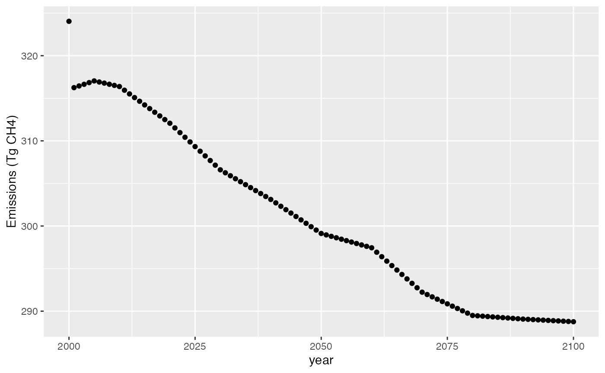

hector_apply.RmdThis tutorial shows how to use the Hector climate model in R to answer a simple science question. In this case, we’ll be looking at solving for the methane emissions required over time to produce a constant atmospheric methane concentration from 2000 through 2100.
To run this experiment, you will need to have the nleqslv package installed. This package will be used to generate successive guesses in the search for an emissions pathway that produces the target concentration.
The nleqslv package requires us to supply a function that takes a vector of inputs (i.e., emissions by year) and produces a vector of outputs that are the discrepancies between the Hector output and the target concentrations. In order to create such a function we will need to set up an interface to Hector. Since all of our calculations are going to involve years 2000 and beyond, we will run up through 1999.
library('hector')
hector_inifile <- file.path(system.file('input', package='hector'), 'hector_rcp60.ini')
hcore <- newcore(hector_inifile, suppresslogging=TRUE)
run(hcore, 1999)## Hector core: unnamed hector core
## Start date: 1745
## End date: 2300
## Current date: 1999
## Input file: /home/travis/R/Library/hector/input/hector_rcp60.iniOur target function will take a vector of emission values as input and return a vector of discrepancies between the hector outputs and the target output. We’ll make the target concentration value 1820 ppbv CH4 (a bit higher than the year 2000 value in the baseline scenario).
To solve for the target emissions we just pass the target function to nleqslv. We also need an initial guess for the emissions. It doesn’t really matter what the guess is, so long as it isn’t something so large that it will cause the model to fail outright. We will use a constant 300 Tg CH4 as the initial guess.
x <- rep(300.0, times=101) # 2000:2001 includes both endpoints
slv <- nleqslv::nleqslv(x, f, method="Broyden")We should check to see that the algorithm really converged. The discrepancy values from the last iteration are stored in the fvec entry.
## [1] 4.381491e-09The convergence looks ok, so let’s plot the results:

The concentration target of 1820 ppbv CH4 that we specified in 2000 is a bit of a jump from what was in the scenario we based our run on (the original was about 1811 ppbv), so we have a small spike in emissions in 2000. After that the emissions settle down into something smoother.
Once we’re done with our Hector instance, we need to make sure to shut it down, so that the memory it is using will be freed.
## Hector core (INACTIVE)This simple example shows the kind of thing you can do by combining the Hector R interface with other packages available in R. It would be easy enough to add emissions for other gasses or work in terms of forcing or temperature. Likewise, instead of solving for an equilibrium you could minimize or maximize some function of the emissions (using the optim function), or run one of the many Monte Carlo packages that are available in R.